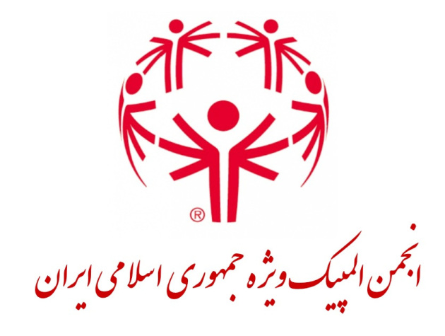
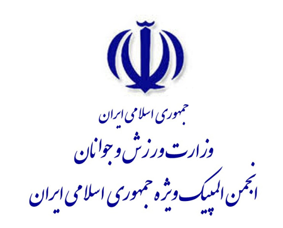

<!doctype html><html lang="fa" dir="rtl"><head><meta charset="utf-8"><meta name="viewport" content="width=device-width,initial-scale=1"><meta name="description" content="المپیک ویژه؛ معرفی، مأموریت، فعالیت‌ها، ساختار و پیوندهای مرجع در پورتال ورزش."><title>المپیک ویژه | پورتال ورزش</title>
<style>
@font-face{font-family:PortalFa;src:url("../../assets/fonts/Vazirmatn-Regular.woff2") format("woff2");font-weight:400;font-display:swap}@font-face{font-family:PortalFa;src:url("../../assets/fonts/Vazirmatn-Bold.woff2") format("woff2");font-weight:700;font-display:swap}
*{box-sizing:border-box}body{margin:0;background:#f3f6f8;color:#263f52;font-family:PortalFa,Tahoma,sans-serif}a{color:inherit;text-decoration:none}.wrap{width:min(1120px,calc(100% - 32px));margin:auto}.top{height:5px;background:#234c69}.head{background:#fff;border-bottom:1px solid #dce5eb}.headin{height:66px;display:flex;align-items:center;justify-content:space-between}.brand{font-size:17px;font-weight:700;color:#244b66}.back{font-size:11px;color:#47677e;border:1px solid #dbe4ea;border-radius:7px;padding:9px 13px}.hero{background:#183e59;color:#fff}.hero-in{display:grid;grid-template-columns:1fr 330px;gap:30px;align-items:center;padding:30px 0}.kicker{font-size:11px;color:#cbd9e2;margin-bottom:8px}.hero h1{font-size:clamp(22px,3vw,32px);line-height:1.7;margin:0 0 9px}.hero p{font-size:12px;line-height:2.25;color:#e0e8ee;margin:0}.media{display:grid;grid-template-columns:1fr 1fr;gap:8px}.media img{width:100%;height:138px;object-fit:cover;border-radius:8px;border:1px solid #ffffff35;background:#e6edf1}.media .logo-placeholder{grid-column:1/-1;min-height:76px;display:grid;place-items:center;background:#fff;color:#6b8292;border:1px solid #e1e8ed;border-radius:8px;font-size:11px}.media .logo-placeholder{grid-column:1/-1;min-height:76px;display:grid;place-items:center;background:#fff;color:#6b8292;border:1px solid #e1e8ed;border-radius:8px;font-size:11px}.media .logo-placeholder{grid-column:1/-1;min-height:76px;display:grid;place-items:center;background:#fff;color:#6b8292;border:1px solid #e1e8ed;border-radius:8px;font-size:11px}.media .logo-placeholder{grid-column:1/-1;min-height:76px;display:grid;place-items:center;background:#fff;color:#6b8292;border:1px solid #e1e8ed;border-radius:8px;font-size:11px}.media .logo-placeholder{grid-column:1/-1;min-height:76px;display:grid;place-items:center;background:#fff;color:#6b8292;border:1px solid #e1e8ed;border-radius:8px;font-size:11px}.media .logo-placeholder{grid-column:1/-1;min-height:76px;display:grid;place-items:center;background:#fff;color:#6b8292;border:1px solid #e1e8ed;border-radius:8px;font-size:11px}.media .logo-placeholder{grid-column:1/-1;min-height:76px;display:grid;place-items:center;background:#fff;color:#6b8292;border:1px solid #e1e8ed;border-radius:8px;font-size:11px}.media .logo{grid-column:1/-1;height:86px;object-fit:contain;background:#fff;padding:10px}.content{padding:22px 0 48px}.actions{display:flex;gap:9px;flex-wrap:wrap;margin-bottom:16px}.action{display:inline-flex;padding:10px 14px;background:#244f6c;color:#fff;border:1px solid #244f6c;border-radius:7px;font-size:11px}.action.secondary{background:#fff;color:#315a75;border-color:#d4dfe6}.muted{font-size:11px;color:#8796a1;padding:10px}.cols{display:grid;grid-template-columns:1.45fr 1fr;gap:15px}.panel{background:#fff;border:1px solid #dfe7ec;border-radius:9px;padding:18px;margin-bottom:14px}.panel h2{font-size:14px;color:#244b66;margin:0 0 10px}.panel p{font-size:11.5px;line-height:2.35;color:#607687;margin:0 0 9px}.panel p:last-child{margin:0}.list{padding:0 17px 0 0;margin:0}.list li{font-size:11px;line-height:2.25;color:#607687;margin:3px 0}.facts{display:grid;grid-template-columns:1fr 1<div class="media"><div class="logo-placeholder">نشان المپیک ویژه</div></div>ius:7px;padding:10px}.fact b{display:block;font-size:10px;color:#748999;margin-bottom:4px}.fact span{font-s<div class="media"><div class="logo-placeholder">نشان المپیک ویژه</div></div>op:1px solid #dfe6eb;text-align:center;padding:16px;color:#82919d;font-size:10px}
@media(max-width:760px){.<div class="media"><div class="logo-placeholder">نشان المپیک ویژه</div></div>x}.media .logo-placeholder{grid-column:1/-1;min-height:76px;display:grid;place-items:center;background:#fff<div class="media"><div class="logo-placeholder">نشان المپیک ویژه</div></div>x}.media .logo-placeholder{grid-column:1/-1;min-height:76px;display:grid;place-items:center;background:#fff<div class="media"><div class="logo-placeholder">نشان المپیک ویژه</div></div>x}.media .logo-placeholder{grid-column:1/-1;min-height:76px;display:grid;place-items:center;background:#fff;color:#6b8292;border:1px solid #e1e8ed;border-radius:8px;font-size:11px}.media .logo-placeholder{grid-column:1/-1;min-height:76px;display:grid;place-items:center;background:#fff;color:#6b8292;border:1px solid #e1e8ed;border-radius:8px;font-size:11px}.media .logo-placeholder{grid-column:1/-1;min-height:76px;display:grid;place-items:center;background:#fff;color:#6b8292;border:1px solid #e1e8ed;border-radius:8px;font-size:11px}.media .logo-placeholder{grid-column:1/-1;min-height:76px;display:grid;place-items:center;background:#fff;color:#6b8292;border:1px solid #e1e8ed;border-radius:8px;font-size:11px}.media .logo-placeholder{grid-column:1/-1;min-height:76px;display:grid;place-items:center;background:#fff;color:#6b8292;border:1px solid #e1e8ed;border-radius:8px;font-size:11px}.media .logo{height:75px}.cols{grid-template-columns:1fr}.wrap{width:calc(100% - 24px)}.headin{height:59p<div class="media"><div class="logo-placeholder">نشان المپیک ویژه</div></div></head><body><div class="top"></div><header class="head"><div class="wrap headin"><a class="brand" href="../../index.html">پورتال ورزش</a><a class="back" href="../federations.html">بازگشت به فهرست فدراسیون‌ها</a></div></header>
<section class="hero"><div class="wrap hero-in"><div><div<div class="media"><div class="logo-placeholder">نشان المپیک ویژه</div></div> alt="نشان رسمی المپیک ویژه" onerror="this.style.display='none'"></div></div></section>
<main class="wrap content"><div class="actions"><a class="action" href="https://specialolympicsiran.com" target="_blank" rel="noopener">ورود به پایگاه رسمی</a></div><div class="cols"><div><section class="panel"><h2>معرفی و درباره ما</h2><p>متن قابل استناد از بخش معرفی یا درباره‌ما در پایگاه رسمی این مجموعه در دسترس نبود؛ برای اطلاعات معتبر به پایگاه رسمی مراجعه کنید.</p></section></div></div></main><footer class="footer">پورتال ورزش · مرجع معرفی ساختار ورزش ایران</footer></body></html>